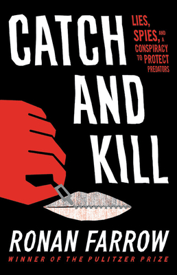
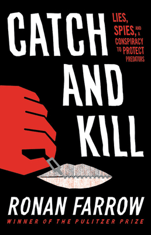

The Karnala Bird Sanctuary is located in Panvel Taluka of Raigad District, outside Mumbai, India near Matheran and Karjat.It is the first bird sanctuary in Maharashtra
Kolhapur: Stop here for the gorgeous temples, a little bit of history and lots of good food. Also famed for its sandals and spices, Kolhapur deserves every bit of your time.
Mumbai to GanpatiPule- There is nothing to beat a Konkan getaway if you want to drink in the beauty of lush greens, clear, sparkling waters of pristine white beaches, and ancient, colorful temples each of which has a unique story to tell.


The plot follows four young women who have left their homes to work but face sexual harassment, which has a negative impact on them. Things go wrong when they murder a man on a fateful night and are apprehended.
Pathaan is an action spy-thriller movie directed by Siddharth Anand. The film's story, screenplay, and dialogue were penned by Siddharth Anand, Shridhar Raghavan, and Abbas Tyrewala. The movie stars Shahrukh Khan, Deepika Padukone, and John Abraham in the main lead roles, along with Dimple Kapadia, Siddhant Ghegadmal, and many others in supporting roles.
Married for many years, Nirmal and Naseeb have lost all hope of having a child. Naseeb persuades Nirmal to marry her younger sister, but sharing her husband proves more difficult than she thought.
 


Standing on the stage for the twenty-fifth anniversary of The Princess Bride, I felt an almost overwhelming sense of gratitude and nostalgia. It was a remarkable night and it brought back vivid memories of being part of what appears to have become a cult classic film about pirates and princesses, giants and jesters, cliffs of insanity, and of course rodents of unusual size.
In 2017, a routine network television investigation led Ronan Farrow to a story only whispered about: one of Hollywood's most powerful producers was a predator, protected by fear, wealth, and a conspiracy of silence. As Farrow drew closer to the truth, shadowy operatives, from high-priced lawyers to elite war-hardened spies, mounted a secret campaign of intimidation, threatening his career, following his every move and weaponizing an account of abuse in his own family.
Monique is not exactly on top of the world. Her husband has left her, and her professional life is going nowhere. Regardless of why Evelyn has selected her to write her biography, Monique is determined to use this opportunity to jumpstart her career.
Feedback type